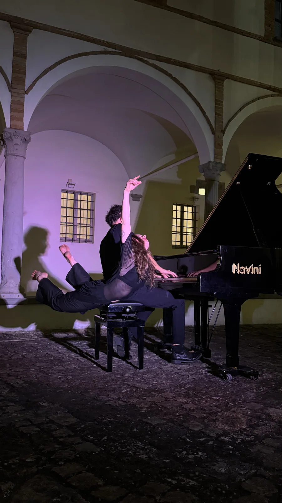

At PRO-FILI
- At the festivalTook part in PRO-FILI with an improvisation on strips of coloured tape that ran right through Pescheria Nuova and out beyond the front door, inviting people in.
The biography
I am a dancer, freelance author and dance movement therapist. It is through movement, bodily expression and everything that comes before words that I feel most at ease communicating, building relationships and telling stories.
My research grew out of contemporary dance, which I studied in depth at CODARTS Rotterdam University of Arts, and today it continues through the cross-pollination of languages.
I like to think of the body as a place where things happen: they meet, they clash, they transform. In short: I dance because it’s the way I think, I create because I can’t keep quiet, and I use my body because, apparently, it’s my favourite way of making a glorious mess.
She is part of the IANUA collective, which organises the festival, and looks after its production.
The work



Photographs: IANUA, 2026.